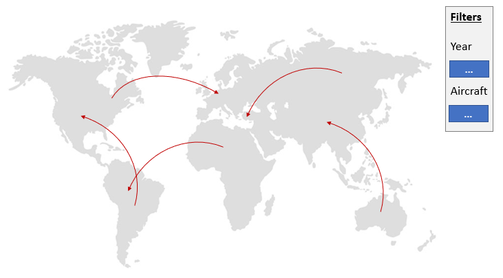

What we then came up with, was an idea to visualize some statistics in regards to plain crashes. Max had just recently watched an interesting documentary on how plane crashes have developed over time - and data was readily available.
As we were searching for ideas for this project we stumbled upon data of plane crashes on Kaggle.com
The csv had a few unnecessary columns and some format problems which we got rid of. With the cleaned csv, we were ready to go.
Just jump right into the visualisation below or alternatively select a specific year and/or plane type.
| Select a year | |
| Select a plane type |
The donut chart below shows the top 10 aircraft manufacturers, which have been involved in the selected year above. By default, all years are selected.
The scatter plot below shows how many crashes have been recorded in each year. If you change the aircraft-type in the dropdown above, the crash records of this aircraft-type are added into the chart with a new color. To clear the chart, press the button.
Top ten years, with most crashes
The line chart below should illustrate the evolution of plane safety. Which means that although a plane crash occurs, not all passengers are doomed. But after running the given numbers, it is pretty evidend, that it stays steady around 80-100%
Top ten years, with most fatalities
When we first thought on how we want our visualisation to look like, we were quite confident, that several visualisations had to be made. Initially, we nearly went for an approach, where all different graphs would be displayed in one svg, but we then decided, that this added very small benefits at the cost of loss of overview and simplicity. We built a tooltip for our world map to show details on demand. The color scale shows, where accidents happened and where so often (darker = more crashes)
As we stated before, the main goal was to quickly show a summary of all plane crashes ever recorded. This is why we have moved the world map to the first spot on our visualisation section. More details could then be retrieved either via the tooltip or the further visusalisations
Our visualisations consist of several dimensions
Our color gradient is divded in 6 variants on the world map to quickly see where most crashes happen. The scale is more logarithmical than linear. Would we have gone for a linear approach, we would have lost some clarity and distinguishability.
To maximize Tufte's principle of Data-Ink ratio, we have selected appropriate sizes for displaying data in text and actual visual parts.
“A large share of ink on a graphic should present data-information, the ink changing as the data change. Data-ink is the non-erasable core of a graphic, the non-redundant ink arranged in response to variation in the numbers represented.” Tufte, 1983
We are convinved that our visual arrangements have taken good regards to the Data-Ink ratio.
Whilst programming this website, we laid a big importance on the flow whilst reading and scrolling through the page. To enhance the engagement and visual attractiveness we settled for a "cool" website template, which suited our topic.
Starting with a top navigation bar, clear instructions and informations about our data, and then followed by our visualization, we found a good approach on how the user is being guided through our project.The transition of actions is natural, causal and hierarchical.The visual changes, when filters are applied, further increase the interactivity.
Mainly the world map can be interacted with. You can set a year and aircraft type filter. As soon as you hover over a specific country, the according tooltip opens up - and for ease of visibility, the country gets highlighted. Once you change to another location, the tooltip and highlight changes accordingly.
Since we had scrapped our initial idea on using the SBB dataset and then switched to a completely different approach, we have made any further sketches. However, we had a "bigger picture" of the visualisation in mind, which can be seen below
This image shows, how we initially planned to develop our visualization. We wanted to show routes, where planes crashes and also have some additional filter criterias. After some weeks of testing the approach, we had to switch to only showing where planes have crashed.
There are many other possibilities on how our visualizations can be further improved. We thought about adding more specific information - e.g. how the number of crashes correlates to planes in the sky and draw some conclusions from there. Another useful information would be, how many casualties each crash resulted in. However, due to the time constraints of this module, we finished what can be seen above.
To develop our d3 visualization we used different sources to build our knowledge:
The general template of our website was contributed by Anja Zimmermann on Ilias.
As previously stated, we got the data from Kaggle.
We worked in close collaboration with the group of Rafael Gomes Machado & Tobias Schär - Some similarities might be discoverable :-)
All in all, we learned a lot throughout the projects duration. Both of has have never used d3 before and we were inspired, since we didn't know that creating graphs using only JS, HTML & CSS would be that simple, given the time constraint.
maximilian.becker@stud.hslu.ch
philippe.schwarzer@stud.hslu.ch